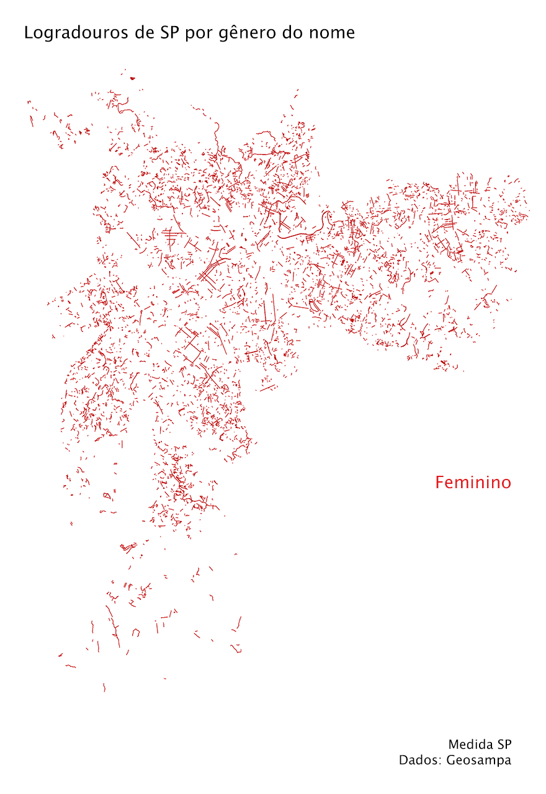

Em 2016, o Medida SP fez um estudo sobre a proporção de ruas cujos nomes homenageiam homens em relação aos que homenageiam mulheres (veja abaixo).
Em parceria com Leila Santiago, transformamos o estudo no poster "São Paulos | São Paulas", expondo graficamente essa desigualdade.
Veja o estudo completo:
Nomes escolhidos para logradouros públicos, como ruas, avenidas e pontes, são importantes símbolos da cultura de uma cidade.
Às vezes, a ausência de certos nomes é um símbolo mais importante ainda.
São Paulo, por exemplo, não tem nenhuma avenida chamada Getúlio Vargas, diferentemente da maioria das outras grandes cidades brasileiras. O motivo mais óbvio para isso é a rixa histórica das elites políticas paulistanas com Vargas.
Outra ausência mais recente é a de ditadores do período militar. Em julho, São Paulo renomeou o Minhocão de viaduto Costa e Silva para viaduto João Goulart. Brasília fez o mesmo no ano passado ao renomear a ponte Costa e Silva para Honestino Guimarães, líder estudantil assasinado pela ditadura em 1974.
Uma outra ausência: as mulheres
Uma outra ausência em nomes de ruas que precisa ser melhor debatida é a das mulheres. De acordo com a pesquisa do Medida SP, apenas cerca de 5,000 logradouros da cidade têm nomes de mulheres. De um total de quase 70,000 logradouros, quase 27,500 têm nome de homens.


Quantidade vs. extensão
Quando olhamos os logradouros por extensão, a diferença entre nomes masculinos e femininos é ainda maior. Os quilômetros de logradouros masculinos é pelo menos 6 vezes maior do que os com nomes femininos.

E o que elas e eles fazem?
Analisando os logradouros que possuem títulos (por exemplo, rua Dr. Arnaldo), podemos ver outra diferença entre gêneros. O título mais comum para nomes femininos é “santa,” e para masculinos “doutor.”


Categorizando os títulos
Ao colocar os títulos em categorias, fica mais clara a discrepância de gênero. Entre os nomes femininos, os títulos religiosos são a maioria, seguidos pelos profissionais, com 75% a menos de logradouros.
Já nos nomes masculinos, os profissionais são a maioria. Os religiosos vêm a seguir, e logo após os militares (incluíndo policiais) que dão nome a quase 1,000 ruas na cidade.


Elas na viela, eles na avenida
Por fim, analisamos os logradouros por tipo. Não foi grande surpresa perceber que os nomes femininos aparecem mais nos logradouros menores: ruas particulares, vielas e largos. Já os nomes masculinos são a grande maioria nos viadutos, avenidas, ruas e praças.

Os dados
Os dados dos logradouros vieram do Geosampa. Para determinar o gênero dos nomes, foi feito um cruzamento com os dados de nomes próprios do IBGE, além de um bom tempo de trabalho manual de limpeza dos dados.